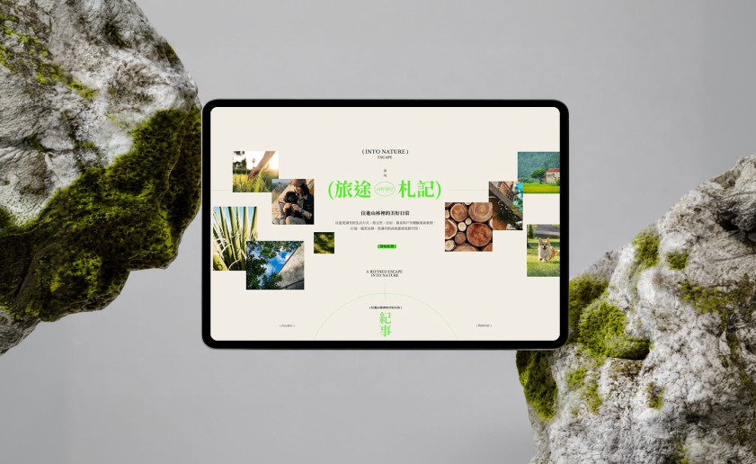
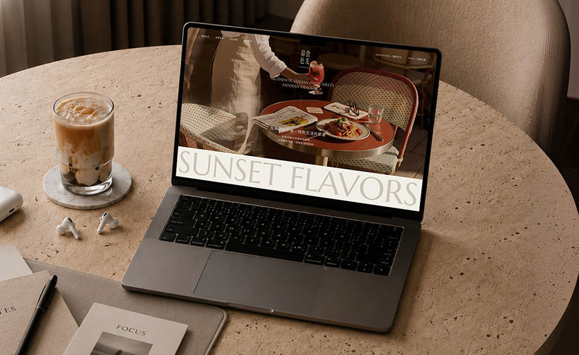
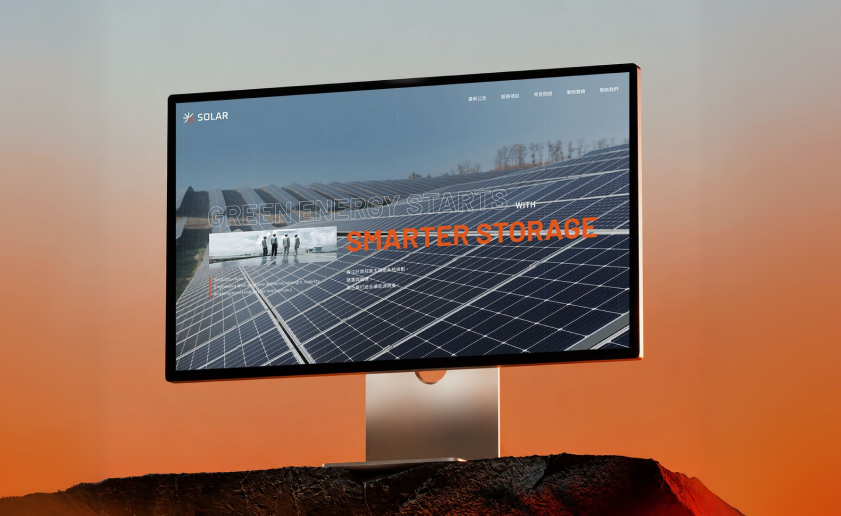

Digital Case / 2026
Core-Site
A full-screen brand website concept built around cinematic image sequencing, restrained typography and a focused digital narrative.
以品牌核心與數位動態結合，打造沉浸式的高階網站體驗
NUDOT 以核心策略作為視覺落點，將品牌識別、互動介面與動態敘事整合為一個可被記住的網站體驗。此頁以滿版影像為主軸，讓每一次滾動都像進入下一段品牌場景。
從第一屏的強烈視覺記憶，到後續的大面積圖像與影片段落，版面刻意減少裝飾與卡片框線，保留黑底、留白、節奏與高反差排版，使品牌內容更集中、更銳利。
Transforming Digital Presence With Visual Precision
Core-Site is designed as a focused brand gateway, combining interface structure, motion behavior and editorial image direction into one immersive scroll sequence.
The layout keeps the experience full-screen and media-led. Each section is intentionally direct: one image, one rhythm, one clear brand impression at a time.
System Design
Prototype
Motion UI
Case Page

Hero System
Interaction


Visual
System
網站細節以「沉浸但不干擾」為原則：大圖滿版承接情緒，文字保持克制，互動與視差只用來加強觀看節奏。整體保留品牌的高級感與可閱讀性，不讓特效蓋過內容本身。

Direction


Experience